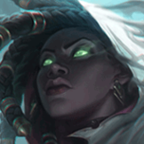
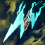

起手裝備
 幽魂之鐮
幽魂之鐮

改彈簧刀→火炮→致死→無盡，跟同路新成裝線；彈簧刀2900且普攻額外充能提高利於遠距接觸。黑切功能線保留變體，攻速鞋依本站升級線，不搬Galeforce附魔。 五成裝為四件購買裝＋進化任務裝，鞋獨立；三級鞋按經濟補，不把外站附魔搬進本站。



五件成裝與鞋子分開列示；起手與核心是購買路線，不是額外佔用的成裝欄位。鞋子完成時機仍依對線壓力與回城金錢調整。


保留迅捷步法續航，改殘暴、斷切、傳奇：敏捷並副骨甲支援新普攻線；不抹除7.3a前搖縮短效果下降。


保留閃現＋治療照顧雙人線；只有選角改虛弱、點燃或光盾時才執行相關連招步驟，原條件提示保留。
加點優先：Q > W > E
Q > W > E，Q仍承擔治療與抽魂，削弱基礎傷害不等於改主W。
附近單位陣亡時有機會生成黯霧靈魂；收魂永久提高物攻、攻擊距離與暴擊率。7.3b每層黯霧提供0.9物攻，標準暴擊傷害修正為80%。對同一英雄以普攻或技能完成兩次命中也能抽取黯霧並造成目前生命傷害。
有後續版本調整的項目以較新數值為準；未列出者不代表完整技能成長表。
有後續版本調整的項目以較新數值為準；未列出者不代表完整技能成長表。
有後續版本調整的項目以較新數值為準；未列出者不代表完整技能成長表。
向指定單位射出穿透光束，傷害敵人並治療自己與友軍；普攻可縮短冷卻，且技能能作用於士兵、守衛與防禦塔來延伸射程。
有後續版本調整的項目以較新數值為準；未列出者不代表完整技能成長表。
有後續版本調整的項目以較新數值為準；未列出者不代表完整技能成長表。
射出黑霧命中第一個敵人並造成傷害，短暫延遲後禁錮目標與周圍敵人；若命中單位死亡則會立即觸發。
化為黯霧並提高跑速，附近友軍進入後會獲得偽裝與幽魂外觀，適合轉線、撤退與掩護隊友進場。
向指定方向發射可橫跨地圖的光波，為波紋路徑上的友方英雄提供護盾，中央較窄路徑對敵人造成物理傷害並施加黯霧。不是按下後全地圖所有隊友自動獲得護盾。
有後續版本調整的項目以較新數值為準；未列出者不代表完整技能成長表。
兩次普攻或技能命中才能抽英雄黯霧；R護盾只給光波路徑友軍，修掉無視位置全隊得盾的說法。
第一次普攻命中英雄 → 1技傷害並治療隊友 → 被動抽取黯霧 → 利用射程拉開 → 安全時補普攻
普攻接一技可快速完成兩次命中抽魂，一技同時回復自己與射手，完成換血後立即退回安全距離。
2技命中敵人或殘血單位 → 普攻壓低目標 → 延遲或立即觸發禁錮 → 1技穿透輸出與治療 → 虛弱主要反打者（改帶時才使用）
二技命中的單位若死亡會立即展開禁錮，可利用殘血士兵或召喚物製造更難反應的控制。 本頁預設為閃現＋治療；本連招的虛弱僅限選角時將治療改帶虛弱且技能可用時使用。維持預設配置時略過該步。
4技對準友軍位置提供護盾 → 3技掩護隊伍進場 → 2技限制敵方走位 → 1技治療與輸出 → 遠距普攻持續輸出
大絕護盾要在敵方爆發落下前抵達；抵達戰場後以三技掩護隊友，再用二技與一技延續戰鬥。
讓射手取得兵線，姍娜從士兵死亡產生的靈魂與對英雄的雙次命中取得成長，這是輔助玩法的主要經濟與能力來源。
刺骨幽闇可指定士兵、隊友、守衛與防禦塔，光束會穿透整條路徑。利用前方單位遠距治療或消耗。
7.3b每魂物攻0.9、標準暴擊修正80%、Q基礎30/60/90/120；不為補回削弱而站樁追魂。彈簧刀提供接觸效率，但不能搶射手兵線。
讓射手穩定補刀，自己利用普攻接刺骨幽闇完成兩次命中抽取黯霧，並收集士兵死亡後產生的靈魂。靈魂落在危險位置時不要勉強撿取；一技可穿過士兵、隊友或守衛同時治療與消耗，終末之擁則留給敵方補刀或走位受限的瞬間。
史提克彈簧刀 → 衝擊火炮 → 致死宣告 → 無盡之刃。改彈簧刀→火炮→致死→無盡，跟同路新成裝線；彈簧刀2900且普攻額外充能提高利於遠距接觸。黑切功能線保留變體，攻速鞋依本站升級線，不搬Galeforce附魔。 黯霧之鐮由起手任務裝進化，保留占位；二級鞋依對線補，三級鞋不延後必要功能裝。
靈魂帶來長射程後，攻擊最近且安全的目標即可，不必為點後排向前。敵方突進時用二技保護主力，一技持續治療；若選角時將治療改帶虛弱，再用虛弱壓制主要威脅。大絕應在爆發落下前施放，讓光波路徑上的隊友先獲得護盾，並盡量讓中央傷害路徑穿過主要目標。
鉤子與定身限制站樁換血，安全AA接Q後拉開；搭能自保的射手才有更多收魂窗口，不能為彈簧刀清兵搶補刀。
對局名單是機制與分路判斷，不代表固定勝率；需同時看雙方熟練度、兵線與陣容。
鉤子與定身限制站樁換血，安全AA接Q後拉開；搭能自保的射手才有更多收魂窗口，不能為彈簧刀清兵搶補刀。
威脅名單是攻略與技能互動，實際需看雙方射手、技能冷卻和兵線；不代表台服勝率排名。
完整成裝為四件購買裝＋一件進化任務裝；鞋獨立。以下以本頁預設為基準，變體需重新檢查同名裝及功能缺口。
依陣容
觸發：護盾讓集火難以完成。
無盡之刃 → 巨蛇鋒牙
護盾讓集火難以完成。
巨蛇用於可穩定對英雄造成傷害的場合，非所有對局必買。
換掉原功能前先確認隊友能補足；替換不是第六件成裝。
依陣容
觸發：治療或吸血阻止擊殺。
預設已包含致死宣告，保留並依威脅提前，不再買第二件。
換掉原功能前先確認隊友能補足；替換不是第六件成裝。
依陣容
觸發：主力輸出需第二次進場且隊友能守復活落點。
無盡之刃 → 守護天使
主力輸出需第二次進場且隊友能守復活落點。
復活甲只在復活後能繼續戰鬥時有價值，不代替站位。
換掉原功能前先確認隊友能補足；替換不是第六件成裝。
依對線
觸發：敵方物理普攻是主要威脅，可犧牲部分輸出／技能加速。
狂戰士護脛 → 鍍板鋼蓋
整條鞋線一起替換；先二級鞋，三級視經濟補。
不買第二雙鞋；主動裝仍占裝備格，不搬外站附魔。
槍銅護脛 → 裝甲戰靴
整條鞋線一起替換；先二級鞋，三級視經濟補。
不買第二雙鞋；主動裝仍占裝備格，不搬外站附魔。
韌性不能縮短擊飛等所有控制。
隊伍多名物理輸出需要削甲，自己不適合站樁普攻，且隊友能補足主要傷害。


保留黑切→C44→火炮→嗜血者，任務裝仍占第五格。這是團隊功能變體，不與彈簧刀線混買六件；7.3a攻速縮短前搖收益下降仍適用。
7.3c差異核對：7.3c直接平衡項目屬符文大亂鬥；本頁保留已核對的峽谷配置。版本更新不等於每位英雄都必須更換Tier或裝備。查看整輪校正範圍。
本頁校正版本：7.3c；校正日期：2026-10-25。
參考來源標示版本：7.3c
本輪核對官方版本差異、道具/符文引用、五成裝與鞋線、逐級加點及情境替換一致性。Tier及玩法屬本站編輯判斷，不是官方排名或台服勝率；未公開的全級技能表不推算。
評級理由：7.3c 維持 S（本站判斷）。由A調S，參考同路S+但保留一階觀察：7.3b已削弱每魂物攻、暴擊修正與Q傷害，尚無台服樣本支持直接給S+。 7.3c 未改動此分路的英雄數值，沒有新證據只因版本號而升降。
Riot 官方資料 ↗ · Riot 官方資料 ↗ · Riot 官方資料 ↗ · Riot 官方資料 ↗ · Riot 官方資料 ↗ · WildRiftFire 參考攻略 ↗
7.3c 的直接英雄倍率改動屬符文大亂鬥；本召喚峽谷配置承接 7.3b。未把模式專屬增削轉為峽谷增削。
五件成裝、獨立鞋線、起手、核心、情境替換引用與一般符文列別均重新檢查；移除裝備不列入當前推薦。
歷史資料有後續調整時，以較新版本數值為準。
| 項目 | 調整前 | 調整後 |
|---|---|---|
| 標準暴擊傷害係數 | 90% | 80% |
| 每層黯霧的物攻 | 1.25 | 0.9 |
| 項目 | 調整前 | 調整後 |
|---|---|---|
| 基礎傷害 | 50/80/110/140 | 30/60/90/120 |
歷史資料有後續調整時，以較新版本數值為準。
| 項目 | 調整前 | 調整後 |
|---|---|---|
| 攻速係數 | 0.4 | 0.3 |
| 基礎攻速 | 0.4 | 0.3 |
| 基礎額外攻速 | 0.6 | 1.1 |
| 每級攻速 | 0.05 | 0.025 |
| 項目 | 調整前 | 調整後 |
|---|---|---|
| 額外攻速的縮短效果 | 原效果 | 效果降低；官方未列精確倍率 |
歷史資料有後續調整時，以較新版本數值為準。
| 項目 | 調整前 | 調整後 |
|---|---|---|
| 取決於目前生命的傷害 | 1.2%~12%（取決於等級） | 1%~10%（取決於等級） |
| 每20層黯霧獲得的暴擊率 | 15% | 10% |
| 普攻暴擊修正 | — | 一般暴擊傷害 × 90% |
| 項目 | 調整前 | 調整後 |
|---|---|---|
| 基礎傷害 | 50 / 90 / 130 / 170 | 50 / 80 / 110 / 140 |
| 項目 | 調整前 | 調整後 |
|---|---|---|
| 傷害 | 250 / 375 / 500 + 120%額外物攻 + 50%魔攻 | 250 / 400 / 550 + 120%額外物攻 + 70%魔攻 |
| 護盾 | 120 / 160 / 200 + 40%魔攻 + 黯霧 × 4 | 120 / 160 / 200 + 50%魔攻 + 黯霧 × 2 |
| 項目 | 調整前 | 調整後 |
|---|---|---|
| 基礎生命 | 600 | 570 |